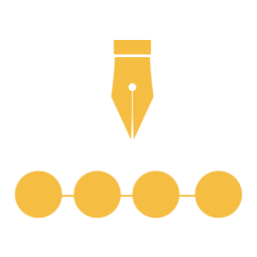
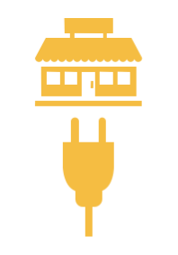
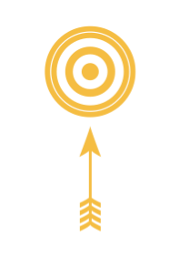
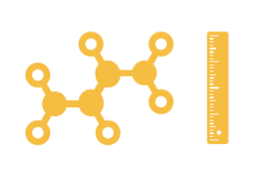
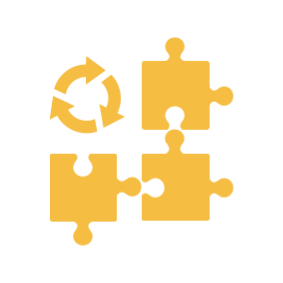

Diseño de procesos

Realizar un taller con el fin de co crear el proceso entre todos los actores, para así entregar de la mejor manera la propuesta de valor al cliente. El taller puede ser utilizado para crear o re definir un proceso de negocio, y consta de una fase previa de selección y planeación; el desarrollo del taller en cinco días, que va desde conocer al cliente, hasta la mejora continua del servicio, pasando por el desarrollo, análisis de riesgos e impacto del proceso y el establecimiento de roles, métricas y datos necesario para su medición; al finalizar se realiza un reporte de la actividad..
Integración de TICS

Realizar un taller con el fin de integrar una nueva tecnología en un proceso de negocio seleccionado. El taller se enfoca en la interacción entre el proceso y sus usuarios mediante tecnología mas no en el desarrollo e implementación de la misma. Consta de una fase previa de selección y planeación; el desarrollo del taller en cinco días, que va desde conocer al cliente, hasta la presentación a dirección de la tecnología, pasando por el la integración de la tecnología, la experiencia del cliente, la visualización del cambio, el análisis de impacto y la innovación alcanzada; al finalizar se realiza un reporte de la actividad..
Consolidación de proceso

Consolidar un proceso de negocio seleccionado, con el fin de establecer una base sólida para su desarrollo. Con base en la ISO 33020, que provee guía para evaluar el nivel de capacidad de los procesos de negocio, se realiza un proyecto de ocho semanas de duración, que ataca los niveles dos y tres de capacidad. El desarrollo consta de cinco fases: definición del proceso, análisis de riesgos, control de cambios, comunicación efectiva y mejora continua. Aunque no se certifica el nivel 3 de capacidad del proceso, se plantean y dejan en funcionamiento las herramientas para lograrlo.
Optimización de proceso

Optimizar un proceso de negocio seleccionado, con el fin de establecer una base sólida para su mantenimiento. Con base en la ISO 33020, que provee guía para evaluar el nivel de capacidad de los procesos de negocio, se realiza un proyecto de nueve semanas de duración, que ataca los niveles cuatro y cinco de capacidad. El desarrollo consta de tres fases: medición del proceso, análisis de impacto y desviaciones, y mantenimiento del proceso. Aunque no se certifica el nivel 5 de capacidad del proceso, se plantean y dejan en funcionamiento las herramientas para lograrlo.
Mejora continua

Realizar un taller con el fin de mejorar los puntos débiles del proceso, para así mantener una correcta operación del mismo a lo largo del tiempo. El taller está pensado para ser rápido y atacar un problema puntual, y consta de una fase previa de selección y planeación; el desarrollo del taller en un día, que va desde definir el contexto del problema, hasta los controles apropiados para la operación, pasando por la definición del problema, establecimiento de objetivo, plan de mejora y los indicadores de desempeño; al finalizar se realiza un reporte de la actividad.